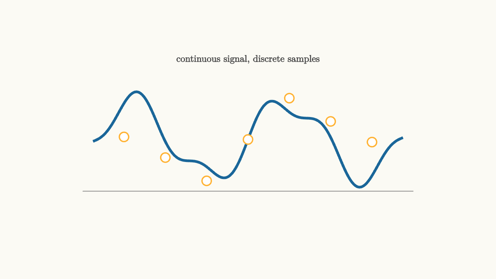

Sampling Turns Time Into A Sequence
Analog circuits live in continuous time. Digital processors live in sequences. Sampling is the bridge.
At sample times
the sampler records
The continuous waveform becomes a list of numbers. That list can be stored, filtered, transmitted, compressed, or analyzed by code.

source
background = [0.985, 0.98, 0.955, 1]
camera = Camera(4.8b)
mesh diagram = block {
. stroke{GRAY, 1} Line(start: [-3.2, -1.0, 0], end: [3.2, -1.0, 0])
. stroke{BLUE, 4} ExplicitFunc(|t| 0.72 * sin(2.1 * t) + 0.22 * sin(5.2 * t), [-3.0, 3.0, 260])
. fill{WHITE} stroke{ORANGE, 2} center{[-2.4, 0.05, 0]} Circle(0.09)
. fill{WHITE} stroke{ORANGE, 2} center{[-1.6, -0.35, 0]} Circle(0.09)
. fill{WHITE} stroke{ORANGE, 2} center{[-0.8, -0.8, 0]} Circle(0.09)
. fill{WHITE} stroke{ORANGE, 2} center{[0, 0.0, 0]} Circle(0.09)
. fill{WHITE} stroke{ORANGE, 2} center{[0.8, 0.8, 0]} Circle(0.09)
. fill{WHITE} stroke{ORANGE, 2} center{[1.6, 0.35, 0]} Circle(0.09)
. fill{WHITE} stroke{ORANGE, 2} center{[2.4, -0.05, 0]} Circle(0.09)
. center{[0, 1.55, 0]} color{DARK_GRAY} Text("continuous signal, discrete samples", 0.66)
}
"sampling"
play Fade(0.6)Sampling is only honest when the samples contain enough information. If the waveform wiggles too quickly between samples, different continuous signals can produce the same sequence.
That ambiguity is aliasing.
Aliasing is mistaken identity
Suppose you sample a sinusoid at a fixed rate. A high-frequency sinusoid can pass through the sample points in exactly the same pattern as a lower-frequency sinusoid. The sequence cannot tell which continuous wave was present.
This is why sampling theory has a speed limit. If the highest frequency in the signal is $B$ cycles per second, the sample rate should exceed
That number is the Nyquist rate. It is a statement about uniqueness: after proper band limiting, samples taken faster than twice the highest frequency determine the original signal.
source
param sample_gap = 0.72
background = [0.985, 0.98, 0.955, 1]
camera = Camera(4.8b)
let Samples = |sample_gap, col| block {
. stroke{BLUE, 3.5} ExplicitFunc(|t| 0.78 * sin(3.2 * t), [-3.1, 3.1, 260])
. stroke{LIGHT_GRAY, 1} Line(start: [-3.2, 0, 0], end: [3.2, 0, 0])
. fill{WHITE} stroke{col, 2} center{[-2 * sample_gap, 0.78 * sin(3.2 * (-2 * sample_gap)), 0]} Circle(0.09)
. fill{WHITE} stroke{col, 2} center{[-sample_gap, 0.78 * sin(3.2 * (-sample_gap)), 0]} Circle(0.09)
. fill{WHITE} stroke{col, 2} center{[0, 0, 0]} Circle(0.09)
. fill{WHITE} stroke{col, 2} center{[sample_gap, 0.78 * sin(3.2 * sample_gap), 0]} Circle(0.09)
. fill{WHITE} stroke{col, 2} center{[2 * sample_gap, 0.78 * sin(3.2 * (2 * sample_gap)), 0]} Circle(0.09)
. fill{WHITE} stroke{col, 2} center{[3 * sample_gap, 0.78 * sin(3.2 * (3 * sample_gap)), 0]} Circle(0.09)
}
"sparse"
mesh title = center{[0, 1.55, 0]} color{DARK_GRAY} Text("move samples closer to reduce ambiguity", 0.62)
mesh picture = Samples(sample_gap: $sample_gap, col: ORANGE)
mesh label = center{[0, -1.55, 0]} color{DARK_GRAY} Text("wide spacing hides fast motion", 0.62)
play Write(0.8)
play Grow(0.8)
"denser"
sample_gap = 0.46
picture = Samples(sample_gap: $sample_gap, col: GREEN)
label = center{[0, -1.55, 0]} color{DARK_GRAY} Text("closer samples reveal the rhythm", 0.62)
play Lerp(1.2)
"alias warning"
picture = block {
. stroke{BLUE, 3.5} ExplicitFunc(|t| 0.78 * sin(3.2 * t), [-3.1, 3.1, 260])
. stroke{RED, 3} ExplicitFunc(|t| 0.78 * sin(0.85 * t + 0.2), [-3.1, 3.1, 260])
. stroke{LIGHT_GRAY, 1} Line(start: [-3.2, 0, 0], end: [3.2, 0, 0])
. center{[0, -1.55, 0]} color{RED} Text("two curves can fit one sparse sequence", 0.62)
}
play Trans(1.0)The slider changes the sample spacing directly. When samples sit far apart, the dots leave room for many possible curves. When they sit closer together, the intended curve is constrained more tightly.
Anti-alias filters protect the sampler
Real signals often contain high-frequency noise or sharp edges. A sampler cannot decide to ignore only the dangerous parts after sampling, because aliasing has already folded them into lower frequencies.
The protection has to happen first. An anti-alias filter reduces frequencies above half the sample rate before the analog-to-digital converter records values.
This makes the signal less sharp, but it keeps the sampled sequence meaningful. The sample rate and the analog filter are chosen together. A higher sample rate allows a gentler anti-alias filter. A lower sample rate requires a stronger cutoff before the sampler.
Reconstruction uses the same promise
Sampling theory is also a reconstruction story. If the original signal was band limited and sampled fast enough, the continuous signal can be rebuilt from sinc-shaped interpolation pulses:
In practice, reconstruction uses finite filters, sample-and-hold circuits, and smoothing. The ideal formula remains useful because it explains the promise being approximated.
Sampling turns time into a sequence, but it also creates obligations. Limit the bandwidth first. Choose a sample rate with margin. Remember that the numbers are a shadow of a waveform, and shadows can lie when the light is too sparse.